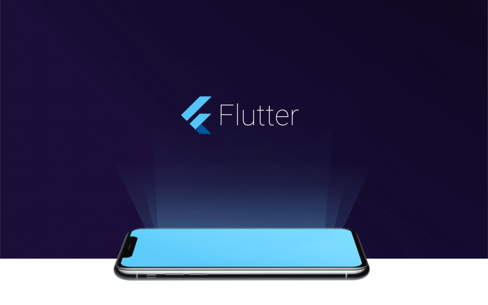
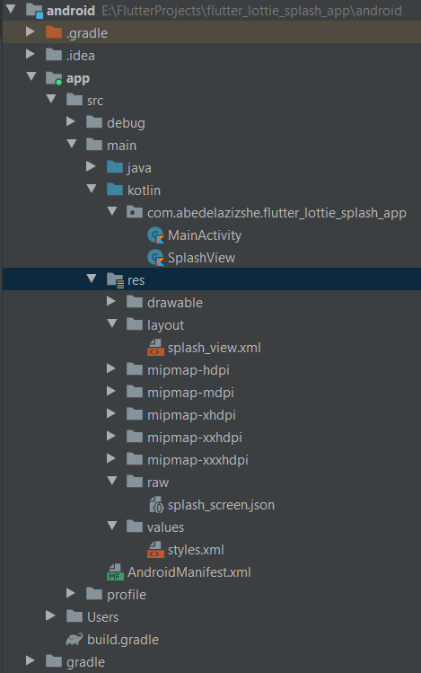
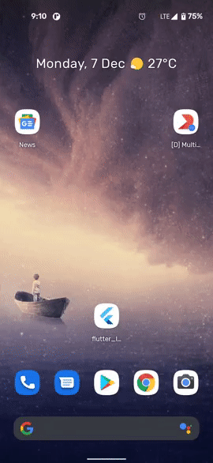
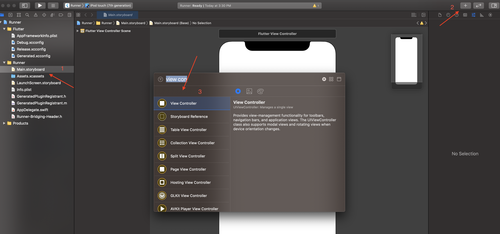
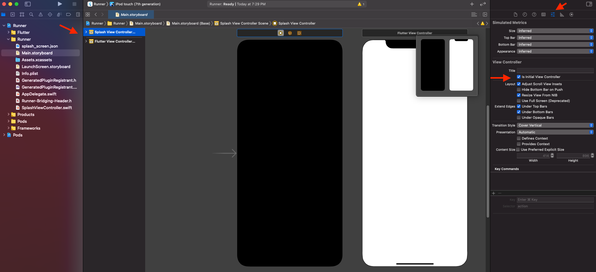
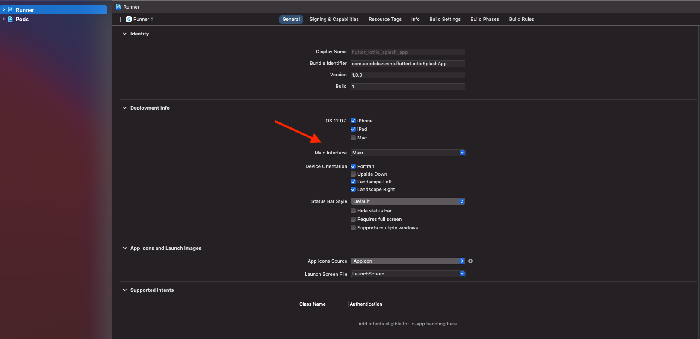
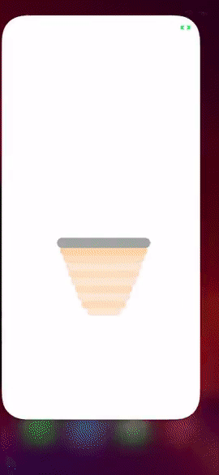

在 Flutter 项目中使用 Lottie 构建原生 Splash 启动页

我们当然可以直接使用 Dart 代码为 Flutter 应用程序添加动画启动效果，但是，Flutter 应用程序在 Android 和 iOS 中以 FlutterActivity 或 FlutterViewController 的形式启动，会让 Flutter 应用程序在实际绘制第一帧之前已经耗费了一段时间。因此，在应用启动时设置启动画面将会带来更好的用户体验。
值得一提的是，在 Flutter 的官方文档中我们可以轻松地将静态图像添加为启动页，并且这个页面上面有充足的文档信息提供给我们使用。我们事实上只需将图像添加到 Android 的 drawable 文件夹中和 iOS 的资源文件夹中，然后在 Android 的 styles.xml 和 iOS 的 LaunchScreen.storyboard 中使用它们即可。但是，在针对如何使用 Lottie 等其他库实现应用程序启动页面动画的功能，我并不能找到相关的参考资料，而这些就是我将在本文中讲述的内容。
为什么我们要使用 Lottie?
Lottie 是一个支持多平台（包括 Android 与 iOS）的库，用于通过 Bodymovin 解析 Adobe After Effects 导出的 JSON 格式的动画，并以本地方式呈现。这意味着动画是由专业的设计人员设计的，并使用的是 JSON 文件导出，让我们开发人员无需再额外付出什么努力，轻轻松松完成动画的渲染。在本教程中，我们将使用由 LottieFiles 创建的免费示例文件，可以在这里中找到该原文件。让我们开始我们的 Flutter + Lottie 之旅吧。
首先让我们先创建一个新的 Flutter 项目，然后执行以下步骤：
Android
- 先添加 Lottie 依赖到你的项目的
app/build.gradle文件中（相对于 Flutter 应用程序则是android/app/build.gradle文件）（在这里我也同样添加了 Constraint Layout）
dependencies {
...
implementation "com.airbnb.android:lottie:3.5.0" # 当前版本 3.6.0
implementation "androidx.constraintlayout:constraintlayout:2.0.4"
# 译者注：原文为 implementation "com.android.support.constraint:constraint-layout:2.0.4" 但 Lottie 2.8+ 只支持 AndroidX 项目
...
}
- 在
AndroidManifest.xml中删去name为 io.flutter.embedding.android.SplashScreenDrawable 的<meta-data>标记并替换activity标签下面的LaunchTheme为NormalTheme，现在你的文件是这样的：
<manifest xmlns:android="http://schemas.android.com/apk/res/android"
package="com.abedelazizshe.flutter_lottie_splash_app">
<!-- io.flutter.app.FlutterApplication is an android.app.Application that
calls FlutterMain.startInitialization(this); in its onCreate method.
In most cases you can leave this as-is, but you if you want to provide
additional functionality it is fine to subclass or reimplement
FlutterApplication and put your custom class here. -->
<application
android:name="io.flutter.app.FlutterApplication"
android:label="flutter_lottie_splash_app"
android:icon="@mipmap/ic_launcher">
<activity
android:name=".MainActivity"
android:launchMode="singleTop"
android:theme="@style/NormalTheme"
android:configChanges="orientation|keyboardHidden|keyboard|screenSize|smallestScreenSize|locale|layoutDirection|fontScale|screenLayout|density|uiMode"
android:hardwareAccelerated="true"
android:windowSoftInputMode="adjustResize">
<!-- Specifies an Android theme to apply to this Activity as soon as
the Android process has started. This theme is visible to the user
while the Flutter UI initializes. After that, this theme continues
to determine the Window background behind the Flutter UI. -->
<meta-data
android:name="io.flutter.embedding.android.NormalTheme"
android:resource="@style/NormalTheme"
/>
<intent-filter>
<action android:name="android.intent.action.MAIN"/>
<category android:name="android.intent.category.LAUNCHER"/>
</intent-filter>
</activity>
<!-- Don't delete the meta-data below.
This is used by the Flutter tool to generate GeneratedPluginRegistrant.java -->
<meta-data
android:name="flutterEmbedding"
android:value="2" />
</application>
</manifest>
你可以在 /android/app/res/values/styles.xml 文件夹中删除 LaunchTheme 的定义，因为你将不再需要它。
-
在
/android/app/res/values文件夹下创建一个raw目录，并复制生成的.json文件（无论你是创建自己的文件还是从上面的链接下载了免费示例）。 在本案例中，JSON 文件夹的名字应该是splash_screen.json。 -
为了使用
.json文件并显示动画视图，我们需要创建具有其布局的启动视图类。 在/android/app/res下，创建一个名为layout的新目录（如果不存在的话），然后创建一个名为splash_view.xml的新的布局资源文件。 打开这个 XML 文件，修改文件的代码为：
<?xml version="1.0" encoding="utf-8"?>
<androidx.constraintlayout.widget.ConstraintLayout xmlns:android="http://schemas.android.com/apk/res/android"
xmlns:app="http://schemas.android.com/apk/res-auto"
android:layout_width="match_parent"
android:layout_height="match_parent">
<com.airbnb.lottie.LottieAnimationView
android:layout_width="match_parent"
android:layout_height="match_parent"
app:layout_constraintBottom_toBottomOf="parent"
app:layout_constraintStart_toStartOf="parent"
app:layout_constraintTop_toTopOf="parent"
app:lottie_autoPlay="true"
app:lottie_rawRes="@raw/splash_screen"
app:lottie_loop="false"
app:lottie_speed="1.00" />
</androidx.constraintlayout.widget.ConstraintLayout>
在这个示例中，我将动画设置为自动播放，设置的播放速度为 1.0，并且禁止循环播放功能。你可以根据需要使用不同的值。 最重要的部分是 app:lottie_rawRes 属性，它定义了我们要使用在 raw 目录中添加的 JSON 文件。现在，我们需要创建启动视图的类。让我们在 /android/app/src/main/kotlin/YOUR-PACKAGE-NAME 中来创建一个新的 Kotlin 类。将这个类命名为 SplashView，然后修改它的内容为：
import android.content.Context
import android.os.Bundle
import android.view.LayoutInflater
import android.view.View
import io.flutter.embedding.android.SplashScreen
class SplashView : SplashScreen {
override fun createSplashView(context: Context, savedInstanceState: Bundle?): View? =
LayoutInflater.from(context).inflate(R.layout.splash_view, null, false)
override fun transitionToFlutter(onTransitionComplete: Runnable) {
onTransitionComplete.run()
}
}
如你所见，此视图 Inflate 了 splash_view 布局文件。最后一步是告诉 MainActivity 我们的自定义启动视图。
5.转到 /android/app/src/main/kotlin/YOUR-PACKAGE-NAME 文件夹，然后单击 MainActivity.kt。 FlutterActivity 提供了一种称为 provideSplashScreen 的方法，修改代码为：
import io.flutter.embedding.android.FlutterActivity
import io.flutter.embedding.android.SplashScreen
class MainActivity: FlutterActivity() {
override fun provideSplashScreen(): SplashScreen? = SplashView()
}
现在项目的目录应该像这样：

这就是 Android 下 Lottie 构建 Splash 启动页的方法，只需要跑一下这个应用程序然后你就能够看到应用程序启动时候的动画了。

iOS
让我们在 iOS 中添加启动页：
- 打开项目所在的目录，单击 ios 文件夹，然后双击
Runner.xcworkspace打开你的项目。
2.单击 Main.storyboard，你将看到带有一个屏幕的布局编辑器。 我们需要添加一个新的 ViewController，这将是我们的启动页（你可以通过单击右上角的 + 号来做到这一点。点击之后，屏幕中将弹出一个窗口。我们在输入框处输入 View Controller 搜索并将这个控件拖动到编辑器中即可），如以下屏幕快照所示：

- 完成了第二步之后，你会看到两个屏幕。选择新的 View Controller 然后点击
attributes inspector，然后再点击is initial view controller.

- 我们需要在
ios/Podfile文件中添加 Lottie 依赖;
pod 'lottie-ios'
这个文件中现在应该是这样的：（编者注：可能你已经修改了一部分设置了，这里只是一个案例）
#platform :ios, '9.0'
target 'Runner' do
use_frameworks!
pod 'lottie-ios'
end
然后运行这个应用程序（确保命令行当前在 ios 目录中。如果不是，那么就使用 cd 命令将你的目录移动到 ios 目录中）
pod install
- 使用 Xcode 将你的生成的
.json文件拖到中的根目录中（请选择Copy items if needed选项），这个文件可能是你自己创建的文件，也有可能是你从上面的链接下载了免费样本。在本案例中它的名字是splash_screen.json。
6.在已经添加了依赖项和 splash_screen.json 文件的情况下，我们可以创建我们的初始视图控制器，该控制器将处理显示的动画。打开你的 ios 项目，在项目根目录处（相对于 Flutter 根目录：/ios/Runner）创建一个新的名为 SplashViewController 的 Swift 文件。在类中编写任何内容之前，我们先来修改一下 AppDelegate.swift 以创建 FlutterEngine。 如果你跳过了这个步骤，则动画启动画面的动画播放完了以后不能跳转至 FlutterViewController。
import UIKit
import Flutter
@UIApplicationMain
@objc class AppDelegate: FlutterAppDelegate {
lazy var flutterEngine = FlutterEngine(name: "MyApp")
override func application(
_ application: UIApplication,
didFinishLaunchingWithOptions launchOptions: [UIApplication.LaunchOptionsKey: Any]?
) -> Bool {
// Runs the default Dart entrypoint with a default Flutter route.
flutterEngine.run()
// Used to connect plugins (only if you have plugins with iOS platform code).
GeneratedPluginRegistrant.register(with: self.flutterEngine)
return super.application(application, didFinishLaunchingWithOptions: launchOptions)
}
}
在这里我们创建了一个名为 MyApp 的 FlutterEngine（你可以自己决定它的名称），然后在 application 的 didFinishLaunchingWithOptions 中运行了这个引擎并在引擎中注册了插件。需要注意的是默认代码是 GeneratePluginRegistrant.register(with：self)，请确保它已向 self.flutterEngine 注册。
- 做完了这些，现在我们可以准备
SplashViewController以显示动画。导航到Flutter的 View Controller 处，修改代码为：
import UIKit
import Lottie
public class SplashViewController: UIViewController {
private var animationView: AnimationView?
public override func viewDidAppear(_ animated: Bool) {
animationView = .init(name: "splash_screen")
animationView!.frame = view.bounds
animationView!.contentMode = .scaleAspectFit
animationView!.loopMode = .playOnce
animationView!.animationSpeed = 1.00
view.addSubview(animationView!)
animationView!.play{ (finished) in
self.startFlutterApp()
}
}
func startFlutterApp() {
let appDelegate = UIApplication.shared.delegate as! AppDelegate
let flutterEngine = appDelegate.flutterEngine
let flutterViewController =
FlutterViewController(engine: flutterEngine, nibName: nil, bundle: nil)
flutterViewController.modalPresentationStyle = .custom
flutterViewController.modalTransitionStyle = .crossDissolve
present(flutterViewController, animated: true, completion: nil)
}
}
在 viewDidAppear 中，我们使用添加的 splash_screen.json 文件初始化动画视图。你可以修改诸如 loopMode、animationSpeed 等播放设置。在动画播放结束后，我们将启动我们的 Flutter 应用程序。
为了获取 FlutterViewController，我们必须获取我们创建并在 AppDelegate.swift 运行的 FlutterEngine 的实例。
let appDelegate = UIApplication.shared.delegate as! AppDelegate
let flutterEngine = appDelegate.flutterEngine
let flutterViewController = FlutterViewController(engine: flutterEngine, nibName: nil, bundle: nil)
然后使用 present(completion :) 启动视图控制器。
- 现在是时候将第 2 步创建的
ViewController与SplashViewController类相链接了。单击Main.storyboard并选择新的ViewController，然后从identity inspector中选择SplashViewController，如屏幕快照所示：

- 最后一步是设置
Main.storyboard的主界面，替换掉LauncherScreen.storyboard。单击 Runner，选择General选项卡，在deployment info下，从下拉菜单中将Main interface设置为 Main，如屏幕快照所示：

生成并运行该应用程序，你应该能够看到动画的启动页了：

就是这样，你现在已经生成了针对 Android 和 iOS 应用程序的动画启动页。有关完整的源代码和演示应用程序可以在这里获取到：
AbedElazizShe/flutter_lottie_splash_app
如果你有任何疑问，或者有更好的方法可以解决此问题，请记得发表评论嗷。
如果发现译文存在错误或其他需要改进的地方，欢迎到 掘金翻译计划 对译文进行修改并 PR，也可获得相应奖励积分。文章开头的 本文永久链接 即为本文在 GitHub 上的 MarkDown 链接。
掘金翻译计划 是一个翻译优质互联网技术文章的社区，文章来源为 掘金 上的英文分享文章。内容覆盖 Android、iOS、前端、后端、区块链、产品、设计、人工智能等领域，想要查看更多优质译文请持续关注 掘金翻译计划、官方微博、知乎专栏。